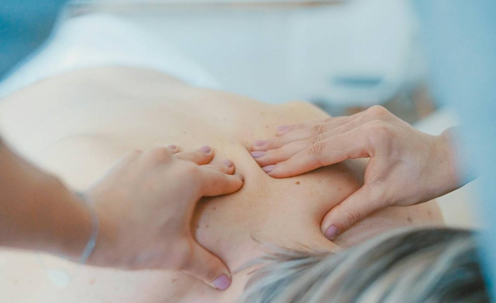
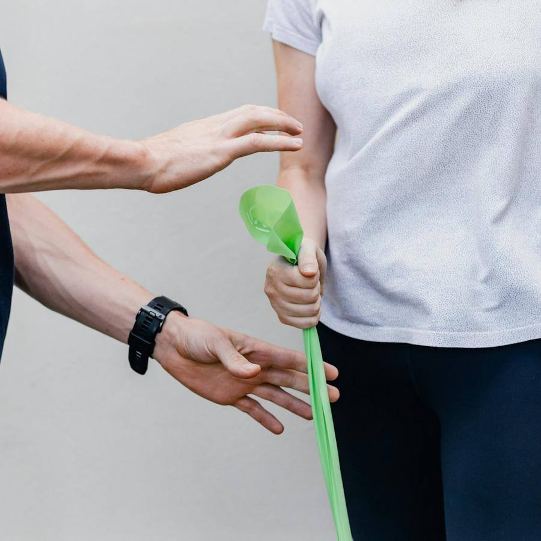
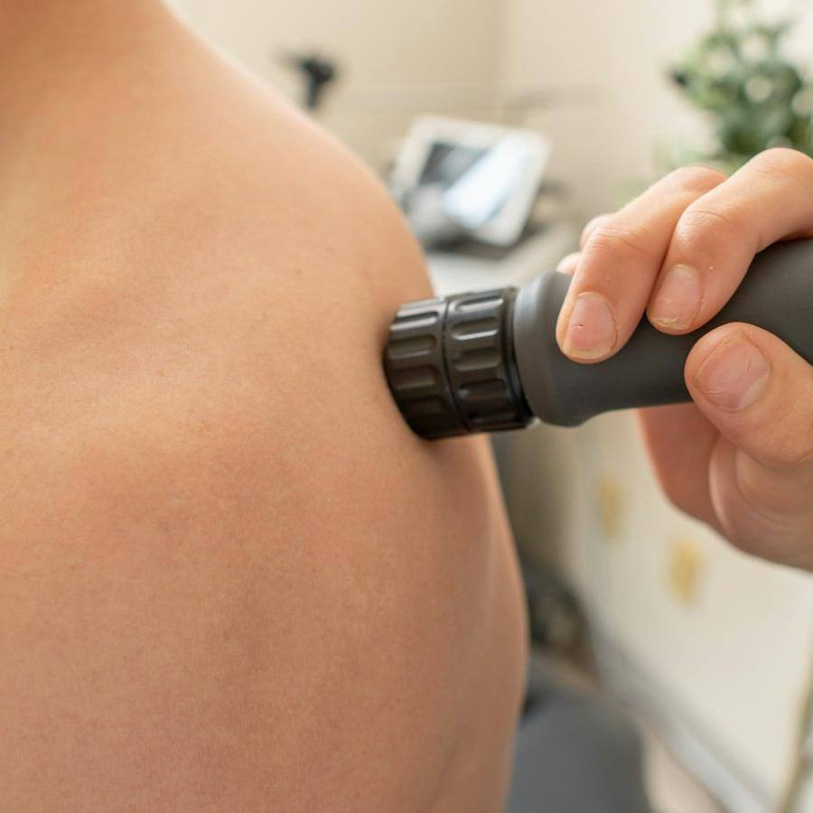

Fisioterapia y osteopatía · El Toscar, Elche
Fisioterapia que te explica lo que te pasa
Te escuchamos, buscamos el origen del dolor y te enseñamos ejercicios para casa. Sesiones de 50 minutos, siempre con el mismo fisioterapeuta, y un informe para tu médico si lo necesitas.


Por qué Fisio Mediterráneo
Lo que nos diferencia
Siempre el mismo fisio
Quien te valora te trata. No vuelves a contar tu historia.
Sesiones de 50 minutos
Sin máquinas mientras estás solo: tratamiento manual y ejercicio.
Ejercicios para casa
Te vas con tu plan en vídeo para avanzar entre sesiones.
Informe para tu médico
Si lo necesitas, se lo enviamos con la evolución.
Fisioterapia y osteopatía
Tratamientos
Precio por sesión. Con bono de cinco sesiones, 36 € cada una.
Fisioterapia
Primera valoración
40 €Exploración, diagnóstico y primer tratamiento. 60 minutos.
favoritoSesión de fisioterapia
40 €Terapia manual y ejercicio. 50 minutos.
favoritoBono 5 sesiones
180 €Válido 3 meses.
Especialidades
Fisioterapia deportiva
45 €Lesiones de correr, pádel y gimnasio.
Suelo pélvico
50 €Posparto, incontinencia y dolor pélvico.
Osteopatía
50 €Visión global del cuerpo. 50 minutos.
Punción seca
+10 €Añadida a la sesión.
Readaptación

Readaptación de lesiones
45 €Vuelta al deporte con plan por fases.
nuevoPilates terapéutico
60 €/mesGrupos de 4. Bono mensual.
Galería
Pásate a verlo
Fotos del local y de lo que hacemos. Pulsa para verlas en grande.
Reseñas
Lo que dicen de nosotros
Reseñas de ejemplo: en tu web van las tuyas, enlazadas a tu ficha de Google.
- Toni G.hace 1 semana5 de 5
Tres sesiones y el dolor de espalda que llevaba meses, fuera. Y me explicaron por qué.
- Lidia M.hace 2 semanas5 de 5
Suelo pélvico después del parto: profesional, cercana y con resultados.
- Raúl S.hace 1 mes5 de 5
Me lesioné corriendo y con la readaptación volví a la media maratón.
- Mª José F.hace 2 meses4 de 5
Muy buenos fisios. Las primeras horas de la mañana se llenan rápido.
- Hugo A.hace 5 días5 de 5
Siempre con el mismo fisio, sin repetir la historia cada vez. Se agradece.
Pedir cita
Tu cita en tres pasos
- 1
Elige tratamiento
Si no sabes cuál, elige primera valoración.
- 2
Elige día y hora
Solo los huecos libres de verdad.
- 3
Ven con ropa cómoda
Y trae informes o pruebas si los tienes.
El equipo
Quién te atiende
Pablo Sempere
Director · Fisioterapeuta
Colegiado 1234. Fisioterapia deportiva.
Andrea Cánovas
Fisioterapeuta
Colegiada 2345. Suelo pélvico y embarazo.
Marcos Lledó
Osteópata
Colegiado 3456. Osteopatía y dolor crónico.
Visítanos
Dónde estamos
Horario
| Lunes | 8:00 – 21:00 |
|---|---|
| Martes | 8:00 – 21:00 |
| Miércoles | 8:00 – 21:00 |
| Jueves | 8:00 – 21:00 |
| Viernes | 8:00 – 21:00 |
| Sábado | Cerrado |
| Domingo | Cerrado |
Cómo llegar
- Parking gratuito en la calle de atrás
- Bus urbano línea F, parada El Toscar
- Clínica en planta baja, accesible
Contacto
¿Necesito volante del médico?
No. Si tienes informes, tráelos a la primera sesión.
¿Cuánto dura la sesión?
Unos 50 minutos; la primera valoración, una hora.
¿Cuántas sesiones necesitaré?
Te lo decimos en la valoración; la mayoría mejora en 3 a 5.
¿Trabajáis con mutuas?
Te damos factura para que te reembolsen.
Te esperamos en El Toscar
Te escuchamos, buscamos el origen del dolor y te enseñamos ejercicios para casa.
Pedir cita¿Quieres una web así para tu negocio?
Fisio Mediterráneo es un negocio inventado: esta página es una plantilla de ejemplo. La adapto a tu negocio con tus fotos, tus precios, tus reseñas y tu forma de reservar. Pruébala tal cual: la reserva funciona, pero no envía nada a nadie.
- Carta o servicios por categorías, galería y reseñas
- Reserva o cita en pocos pasos, con aviso por WhatsApp
- Lista para el móvil, rápida y sin cookies de terceros
- Aviso legal, privacidad y cookies incluidos